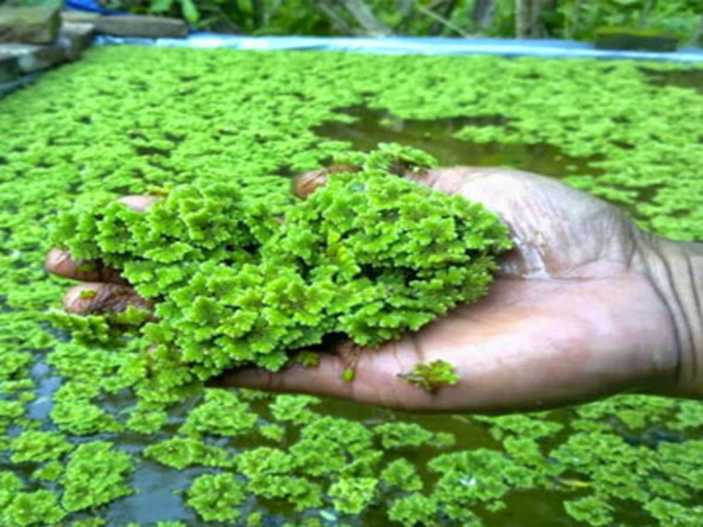

üåü Key Highlights
üçà Sitafal Mohtasav

The 12th Sitafal Mahotsav showcased custard apple varieties and attracted 105 farmers. Varieties included Balanagar, NMK-1, Annona-2, Chandsili, and Arka Sahan.
üåø Azolla Cultivation Training
Training at Dhanora Jangam village demonstrated Azolla cultivation as a sustainable animal feed method for improved milk production.
üåæ Silage Preparation Workshop
Farmers learned to prepare silage for ensuring round-the-year green fodder availability for dairy animals.
üöú BBF Planter Demonstration

Demonstration of Broad Bed Furrow (BBF) technology at Asalgaon and Sulaj helped boost rabi crop productivity by 14–18%.